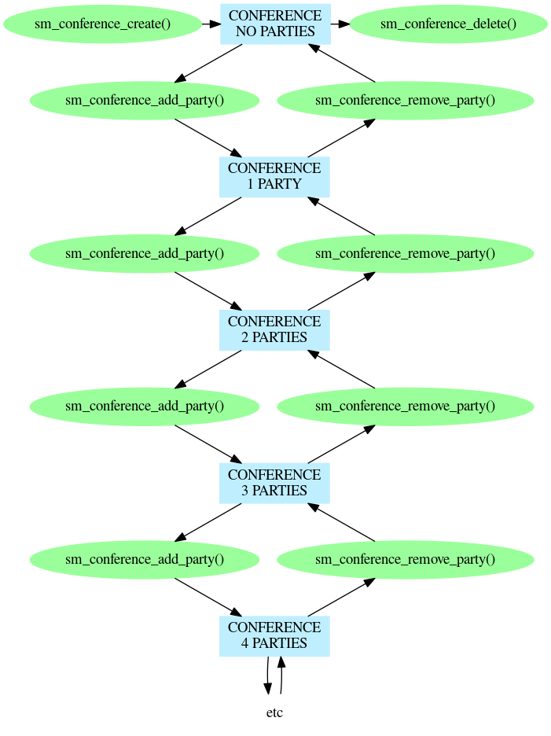
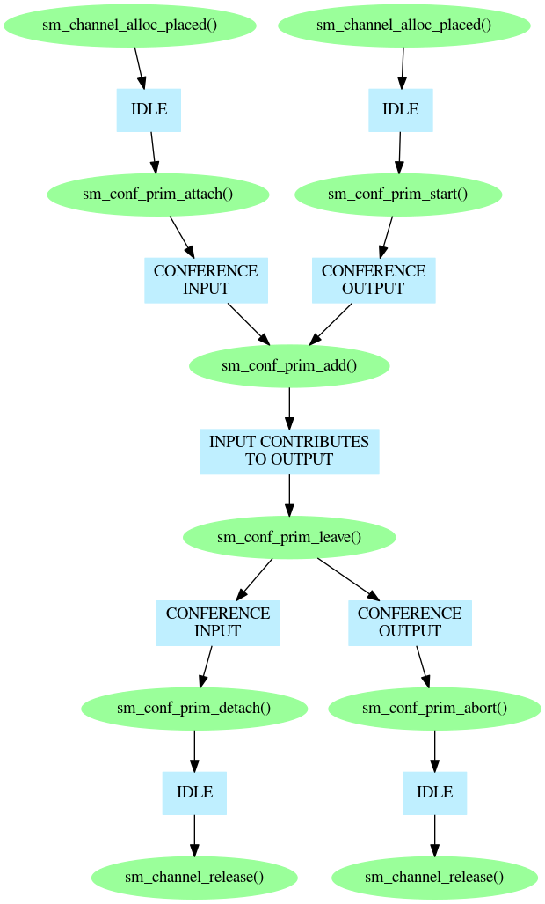

Conferencing is the facility which allows several people to talk to one another as a group even though each is connected through a point-to-point link. Typically, it is used to handle a group of phone calls, which it interconnects; however it can be used with any Prosody data source or destination, so you can use it, for example, to record the conference or to mix in background music.
To perform conferencing you need a group of Prosody channels which are all allocated on the same Prosody processor. While conferences can be built which span multiple Prosody processors (as described in Prosody application note: building large conferences distributed over multiple Prosody modules), they are built from conferences on a single Prosody processor.
Normally, conferencing uses full-duplex channels. When using the low-level conferencing primitives, it is possible to handle the inputs and outputs separately, so you can use one of the following as an input:
and one of these as an output:
The inputs and outputs must also have been connected appropriately. See Prosody Guide - how to use datafeeds for how to do this.
When a channel is acting as an input to a conference, it can simultaneously perform detection and recording. Tones which are detected will be suppressed as they enter the conference, which means that outputs from the conference may contain a short portion of the tone, but most of it will be eliminated. It is not possible to guarantee complete elimination of tones without introducing unacceptable delays in the signal processing. A channel which is both acting as a conference input and performing recording will record the input to the conference.
The high-level conferencing library is intended to be very simple to use. Each high-level conference is a group of Prosody channels (which must be full-duplex channels), each of which is sent the signal from all the others. A conference is created with sm_conference_create, Then parties are added and removed with sm_conference_add_party and sm_conference_remove_party. Finally, the conference is deleted with sm_conference_delete.

The low-level conferencing primitives allow greater control over the way conferences are built. This is mainly because they handle input and output independently. For example, this allows you to implement a conference monitor (which can hear everyone in the conference but cannot be heard by anyone else), a conference background (the opposite of a monitor - can be heard by everyone but cannot hear anyone), and a conference coach (which is a party who can speak privately to one of the conference participants).
A conference output is prepared using sm_conf_prim_start. When this is done, the output from the channel is the output from the primitive conference. Since there are no inputs yet, this will be silent. A conference input is prepared using sm_conf_prim_attach, and can then be added to a primitive conference using sm_conf_prim_add. Many inputs can be added to each primitive conference. and each input can be added to many primitive conferences. For example, a four-party conference (as implemented by the high-level conferencing library) would have these inputs and outputs:
and it would need to be set up like this:
The diagram illustrates the functions used, but only indicates the order in which they are called, since a full picture of even a four-party conference would be too big to be useful.

See also Prosody application note: adding features to high level conferencing library and Prosody application note: recording 2-party conversations.